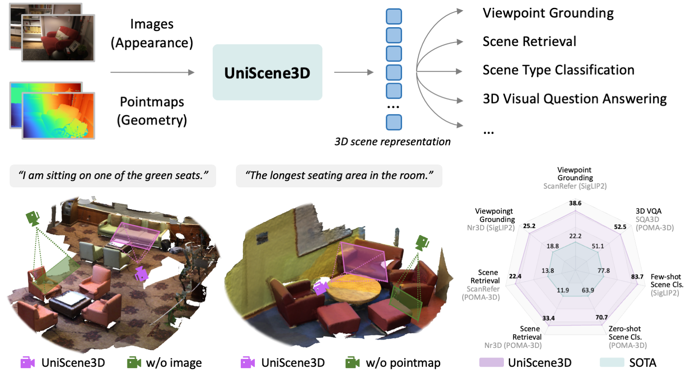
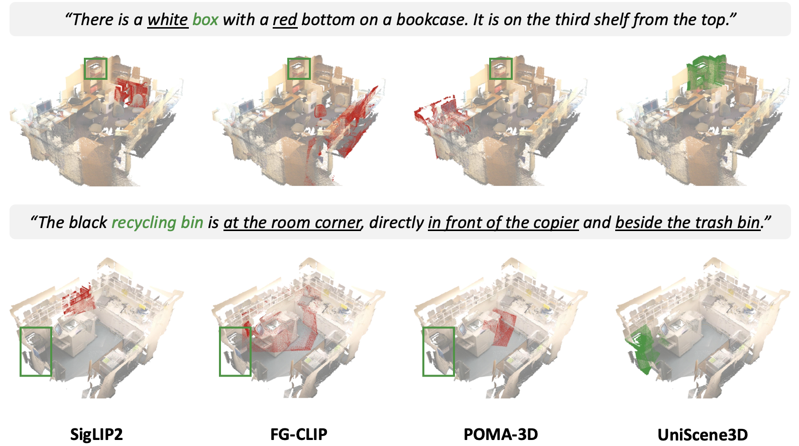
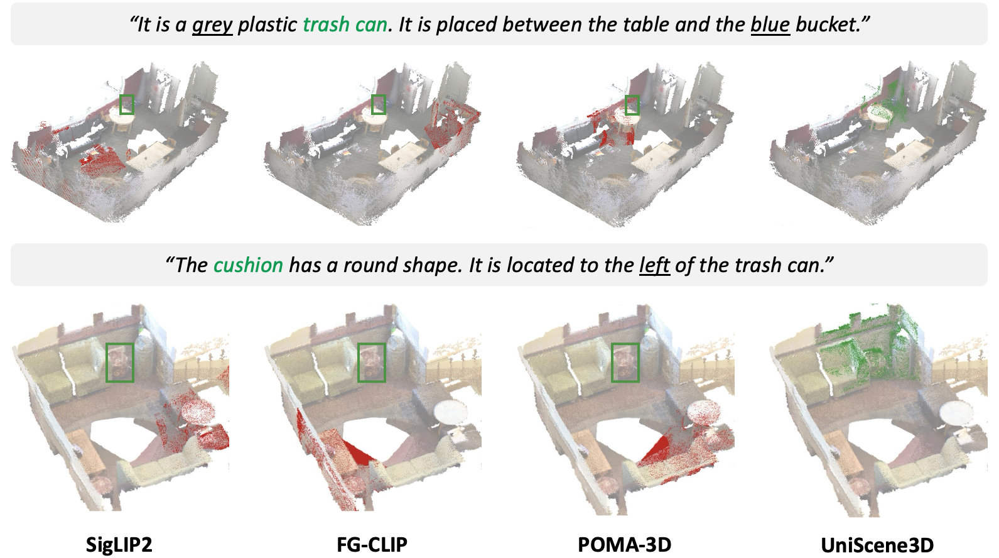

A short video walkthrough of UniScene3D qualitative results and scene understanding behavior.
The scenes and text queries are drawn from wild, out-of-domain data, underscoring UniScene3D's strong
generalization capability.

Figure 1. UniScene3D learns transferable 3D scene representations from multi-view colored
pointmaps for viewpoint grounding, scene retrieval, scene type classification, and 3D visual question
answering.
Abstract
Pretraining 3D encoders by aligning with Contrastive Language-Image Pre-training (CLIP) has emerged as a
promising direction to learn generalizable representations for 3D scene understanding. We propose
UniScene3D, a transformer-based encoder that learns unified scene representations from multi-view colored
pointmaps, jointly modeling image appearance and geometry. For robust colored pointmap representation
learning, we introduce cross-view geometric alignment and grounded view alignment to enforce cross-view
geometry and semantic consistency. Extensive low-shot and task-specific fine-tuning evaluations on viewpoint
grounding, scene retrieval, scene type classification, and 3D VQA demonstrate strong performance, supporting
UniScene3D as a unified representation for 3D scene understanding.
Key Takeaways
Core Question: Unlike 2D vision, 3D scene understanding still lacks a generalizable encoder like CLIP, largely due to the scarcity of large-scale 3D pretraining data. This raises the question: can a 2D vision encoder be extended into a general 3D scene encoder without extensive 3D pretraining?
Preliminary Finding: Pointmaps encode world-frame geometry like point clouds while preserving an image-like format compatible with 2D vision models. Our initial study shows that pretrained 2D vision weights are also beneficial for learning pointmap features.
Model Contribution: UniScene3D extends pretrained CLIP models to learn unified 3D scene representations from pixel-aligned, multi-view colored pointmaps by jointly encoding geometry and appearance.
Key Training Idea: We introduce cross-view geometric alignment and grounded view alignment to enforce geometric and semantic consistency across viewpoints.
Result: The learned representations effectively combine complementary information from images and pointmaps, generalize across diverse scenes, and transfer well to a broad range of downstream 3D tasks.
Method
UniScene3D takes multi-view image-pointmap pairs, fuses appearance and geometry at the input stage, and
learns a unified representation with view-level and scene-level alignment objectives.
Figure 2. The model combines early RGB-geometry fusion with cross-view geometric alignment,
grounded view alignment, view-level alignment, and scene-level alignment.
Qualitative Examples
These examples show how UniScene3D uses appearance and geometry together to retrieve views that match language
queries.


Use the arrow buttons to browse the qualitative visualization pages.
Evaluation
UniScene3D is evaluated on viewpoint grounding, scene retrieval, scene type classification, and 3D VQA.
Viewpoint Grounding
Method
Input
ScanRefer
Nr3D
Sr3D
R@1
R@5
R@10
R@1
R@5
R@10
R@1
R@5
R@10
DFN
I
20.9
59.2
77.6
17.3
51.8
71.8
12.6
43.5
65.6
SigLIP2
I
22.2
61.1
79.5
18.8
54.3
74.0
13.0
44.4
67.2
FG-CLIP
I
20.2
58.5
77.6
17.3
52.6
72.8
13.4
44.5
66.6
Uni3D-g
PC
4.2
19.0
35.5
3.6
17.2
33.4
3.4
16.5
32.2
POMA-3D
PM
16.4
50.6
71.2
13.6
44.5
65.9
10.2
37.4
59.2
UniScene3D
CPM
38.6
72.5
85.7
25.2
64.0
80.9
23.6
62.8
80.4
Scene Retrieval
Method
Input
ScanRefer
Nr3D
Sr3D
n=5 R@1
n=5 R@5
n=10 R@1
n=10 R@5
n=5 R@1
n=5 R@5
n=10 R@1
n=10 R@5
n=5 R@1
n=5 R@5
n=10 R@1
n=10 R@5
DFN
I
4.6
13.5
4.6
13.3
3.9
12.7
4.4
13.0
0.6
3.1
0.6
3.2
SigLIP2
I
1.5
5.3
1.8
6.6
0.7
3.0
1.0
3.8
0.1
0.3
0.1
0.4
FG-CLIP
I
9.2
26.3
16.3
40.0
6.2
20.8
12.4
32.8
0.6
2.7
0.7
3.8
Uni3D-g
PC
0.3
1.4
0.3
1.3
0.5
1.4
0.4
1.5
0.3
1.6
0.2
1.4
3D-VisTA
PC
0.6
2.4
0.7
2.2
0.1
0.9
0.2
1.3
0.2
1.5
0.2
1.7
SceneVerse
PC
0.5
2.1
0.6
2.7
0.5
1.3
0.5
1.4
0.4
1.8
0.1
1.9
POMA-3D
PM
13.8
34.9
20.4
47.2
11.9
32.7
19.3
46.8
1.6
6.9
2.4
9.5
UniScene3D
CPM
22.4
48.6
33.4
62.9
19.7
46.3
30.7
61.7
3.0
11.8
4.6
17.5
Scene Type Classification
Method
Input
Accuracy
0-shot
1-shot
5-shot
10-shot
DFN
I
41.6
40.5
60.1
77.5
SigLIP2
I
36.0
36.6
57.8
77.9
FG-CLIP
I
49.5
40.0
62.0
77.5
Uni3D-g
PC
8.6
21.4
37.1
45.4
3D-VisTA
PC
1.9
28.9
49.4
55.0
SceneVerse
PC
0.8
24.0
51.1
64.2
POMA-3D
PM
63.9
32.2
64.9
74.1
UniScene3D
CPM
70.7
43.2
72.4
83.7
3D VQA
Method
Input
ScanQA
SQA3D
Hypo3D
EM@1
EM@10
EM@1
EM@10
EM@1
EM@10
FG-CLIP
I
20.9
49.9
49.5
89.7
31.1
82.1
3D-VisTA
PC
22.4
52.1
48.5
85.6
31.0
81.2
SceneVerse
PC
22.7
51.5
49.9
85.0
31.6
80.3
POMA-3D
PM
22.3
52.3
51.1
91.2
33.4
84.8
UniScene3D
CPM
23.2
53.5
52.5
92.3
35.2
85.9
Main Findings
UniScene3D transfers well across zero-shot, few-shot, and task-specific fine-tuning settings.
Colored pointmaps outperform image-only, pointmap-only, and RGB-D alternatives.
The proposed alignment objectives consistently improve representation quality.
Performance remains strong across different numbers of input views.
Scaling to more pretraining scenes steadily improves downstream results.
UniScene3D generalizes better than prior methods on out-of-domain scenes.
Conclusion
UniScene3D is a 3D representation learning method that jointly models geometry and appearance from multi-view
colored pointmaps. By leveraging rich cross-view context, it introduces cross-view geometric alignment and
grounded view alignment objectives for pretraining.
Across multiple 3D scene understanding benchmarks, UniScene3D achieves state-of-the-art performance while
remaining robust to varying numbers of input views. Looking forward, a natural next step is to scale
UniScene3D to larger model sizes and explore its use as a general vision backbone for 3D foundation models.
Citation
@inproceedings{mao2026uniscene3d,
title = {Contrastive Language-Colored Pointmap Pretraining for Unified 3D Scene Understanding},
author = {Mao, Ye and Luo, Weixun and Huang, Ranran and Jing, Junpeng and Mikolajczyk, Krystian},
booktitle = {arXiv},
year = {2026}
}